CLAUDE’S PICK


BM25 Wins at Scale: RAG 패러다임 대규모 비교 연구
검색 증강 생성(RAG) 기술의 여러 패러다임을 공정하게 비교할 수 없다는 문제를 해결하기 위해, 본 논문은 28개의 중첩된 계층에서 약 450배 규모로 확장하는 통제된 실험을 수행했다. 동일한 리더 모델과 판정 프로토콜 하에서 정확도, 구성 토큰, 쿼리 토큰, 지연시간을 측정한 결과, BM25는 약 1천만 코퍼스 토큰부터 모든 더 큰 규모에서 다른 패러다임을 압도하며, 최대 20점의 격차를 보인다.
핵심 포인트: 핵심 성과: BM25는 약 450배 규모 확장에서 File-System Agent를 압도하며(쿼리 토큰 39배 절감), 밀집 검색보다 정확하고 그래프 기반 RAG보다 확장성이 우수함. 어휘 기반 검색이 가장 확장 가능한 기본값이며, 에이전트 추론은 독립적으로 작동하기보다 순위 기반 발견 후에 효과적이다.
논문 (Papers)

Claude Tokenizer: Opus 4.7 이상 최대 35% 더 많은 토큰 사용
Anthropic의 새로운 토크나이저는 동일한 텍스트에 대해 기존 모델 대비 최대 35% 더 많은 토큰을 사용하도록 변경되었다. 이는 동일한 명목 요금(입력 토큰당 5달러, 출력 토큰당 25달러)에도 불구하고 실제 사용자 비용을 크게 증가시킨다. Opus 4.6에서 Opus 4.8로 마이그레이션한 경우 트래픽이 유지되어도 청구액이 증가할 수 있으며, 다양한 모델 간 가격 비교 시 실제 비용 격차를 정확히 파악해야 한다.
핵심 포인트: 핵심 성과: 새로운 토크나이저로 인해 동일 텍스트당 1배에서 1.35배(최대 약 35%) 토큰 사용량 증가, maxtokens 파라미터 재조정 필요.
🔗 developersdigest.tech/blog/claude-tokeniz…
기타 (Others)
UEmbed: 통합 희소·밀집 다중모달 임베딩 모델
기존 희소 검색(LSR)은 인코더 양방향 아키텍처에만 국한되고 다중모달 확장 시 별도의 크로스모달 모듈에 의존하는 한계가 있었다. UEmbed는 디코더 기반 다중모달 임베딩 모델로서 단일 인과 전진 패스에서 희소 어휘 표현과 밀집 표현을 동시에 생성한다. 학습 가능한 특수 토큰을 입력에 추가하고 어휘를 분할 부분집합으로 나누어 각 토큰의 인과 은닉 상태가 할당된 부분집합에 대한 희소 가중치를 예측하는 방식으로 작동한다.
핵심 포인트: 핵심 성과: UEmbed-9B가 MMEB-v2에서 밀집 71.8, 희소 71.0을 달성하여 공개 데이터 기반 다중모달 임베딩 모델 중 최고 성능을 기록했으며, BEIR에서도 강력한 기준선과 경쟁력을 유지하면서 단일 모델로 텍스트와 다중모달 입력의 희소·밀집 임베딩을 통합했다.
논문 (Papers)
AI & RESEARCH
Evidence-Ledger Adjudication: AI 에이전트 주장의 증거 추적성 검증
AI 에이전트가 저자의 검증 속도보다 빠르게 주장을 작성하는 문제를 해결하기 위해 증거-장부 판결 워크플로우를 제시한다. 각 주장을 증거 패킷과 연결하고 지원 관계를 할당한 후, 근거 부족, 모순, 또는 혼합 증거를 포함한 주장을 저자에게 반환하는 감사 추적 시스템이다. 2,335개 행의 맹검 벤치마크에서 에이전트 기반 조건이 0.676 관계 정확도를 달성하며, 비에이전트 베이스라인의 0.383 정확도를 크게 상회한다.
핵심 포인트: 핵심 성과: 증거-장부 조건에서 0.676 관계 정확도와 0.601 매크로-F1을 달성하여 베이스라인(0.383, 0.303)을 비교하였으며, 1,270개의 모순 또는 증거 부족 주장을 정확히 감지하면서도 지원되는 주장 중 295개는 거짓 경보로 라우팅했다.
논문 (Papers)
Memory for Large Language Models — LLM 메모리 아키텍처의 체계적 분류법
대규모 언어 모델의 메모리가 암묵적 계산 부산물에서 명시적이고 제어 가능한 메커니즘으로 진화하면서 연구 분야가 단편화되는 문제가 발생했다. 이 논문은 메모리를 표현(암묵적 대 명시적), 업데이트 동역학(오프라인 대 온라인), 지속성(단기 대 장기)의 세 축으로 특성화하는 통합된 아키텍처 중심 분류체계를 제시한다. 메모리 쓰기, 라우팅, 상태 전환, 통합의 세밀한 메커니즘을 형식화하여 계산 결합 메모리와 독립적으로 주소 지정 가능한 메모리 간의 개념적 경계를 명확히 한다.
핵심 포인트: 핵심 기여: 일시적 주의, 반복 상태 역학, 매개변수 효율 적응, 확장 가능한 조회 저장소 등 다양한 메모리 전략을 하나의 통합 프레임워크로 체계화하여 메모리 중심 LLM 설계의 궤적을 제시하고 향후 확장 가능하고 적응형 언어 모델링 혁신의 원칙적 기초를 제공한다.
논문 (Papers)

S3: 시뮬레이션 환경에서 훈련한 검색 에이전트 강화학습
실제 검색 API 호출의 비용과 속도 제약으로 인한 검색 에이전트 강화학습의 병목을 해결하기 위해, 약 100만 편의 논문으로 구성된 로컬 시뮬레이션 환경 S3를 개발했다. 초기 SearchGym 환경은 실제 검색 성능 향상으로 전이되지 못했으나, 검색 공간과 질문 설계를 재구성한 S3에서는 생물학 논문 검색과 Google Search 모두에서 성능이 향상되어, 시뮬레이션 학습이 실제 검색으로 전이 가능함을 입증했다.
핵심 포인트: 핵심 기여: SFT 기반 모델의 정확도 20.7% 대비 RL 기반 모델 43.1%로 약 2배 향상을 달성했으며, 시뮬레이션 환경만으로 훈련한 에이전트가 실제 검색 환경에서도 성능을 유지하는 것을 검증했다.
🔗 blog.trillionlabs.co/posts/search-rl-with…
블로그 (Blog)
Arabic NLP: 아랍어 점 제거 후에도 NLP 성능 유지
아랍어 문자의 형태적 특징보다 분포 구조가 자연어 처리에서 더 중요함을 보여주는 연구. 28개 아랍어 문자 중 다수가 기본 형태(rasm)를 공유하며 점으로만 구별되는데, 역사적으로 점 없는 필사본도 해석 가능했던 현상을 검증. 표준 점 있는 아랍어와 점을 제거한 아랍어, 그리고 동일한 19개 기본 형태로 임의로 재매핑한 문자에 대해 NLP 모델 성능을 비교하여 일관성 있는 문자 체계가 시각적 구별성보다 중요함을 실증적으로 입증한다.
핵심 포인트: 핵심 기여: 아랍어 자연어 처리에서 문자의 시각적 특성(iconicity)보다 분포 구조(distributional property)가 결정적 역할을 수행하며, 임의의 일관된 문자 재매핑도 원본 점 있는 문자와 비슷한 수준의 성능 달성 가능함을 증명.
논문 (Papers)
Three Sides of Retrieval — RAG 검색 성능 향상을 위한 문서·질의·답변 측 최적화
RAG 시스템에서 문서를 청크로 분할할 때 제목 체계와 섹션 경계 같은 구조 정보가 손실되어 검색 성능이 저하되는 문제를 해결한다. 논문은 목차 기반 검색, 에이전틱 질문 분해, 완성도 검증 등 세 가지 방향의 개선 방법을 제시한다. 8개 기업 문서 1,280개 조건 비교 결과, 목차 기반 페이지 검색이 답변 완성도를 0.40 향상시키고, 답변 측 검증과 결합 시 질의 분해 방식을 0.32 상회한다.
핵심 포인트: 핵심 기여: 목차 기반 검색이 LLM 호출 없이 레이아웃 정보로 헤딩 계층구조를 복원하여 유의미한 성능 향상(d = +0.41, p = 0.031)을 달성하며, 특히 완성도와 유용성에서 0.40씩 개선.
논문 (Papers)
경량 멀티에이전트 프레임워크: 콘크리트 방호벽 설계 자동화
LLM을 직접 적용한 구조설계는 환각 위험과 물리적 기반 부족으로 실무 적용이 제한된다. 본 논문은 생성-평가-최적화 폐루프 프레임워크로 AASHTO-LRFD 설계기준을 준수하는 고속도로 방호벽 자동설계 시스템을 제안한다. 80억 파라미터 경량 모델이 폐루프 구조로 제약될 경우 6천억 파라미터 플래그십 모델을 능가하며 98% 이상의 설계 정확도를 달성하여, 설계 자동화에서 모델 크기보다는 검증 루프의 중요성을 입증한다.
핵심 포인트: 핵심 성과: 8B 경량 모델이 631B 대규모 모델을 앞섰으며, 폐루프 멀티에이전트 구조로 설계 정확도 98% 이상 달성. 핵심 기여: 규제 기준과 물리 검증으로 제약된 작은 루프가 모델 크기보다 우수한 성능을 발휘함을 실증하여, 비용 효율성과 설계 투명성을 동시에 확보.
논문 (Papers)
SAO — 에이전트 강화학습을 위한 단일 롤아웃 비동기 최적화
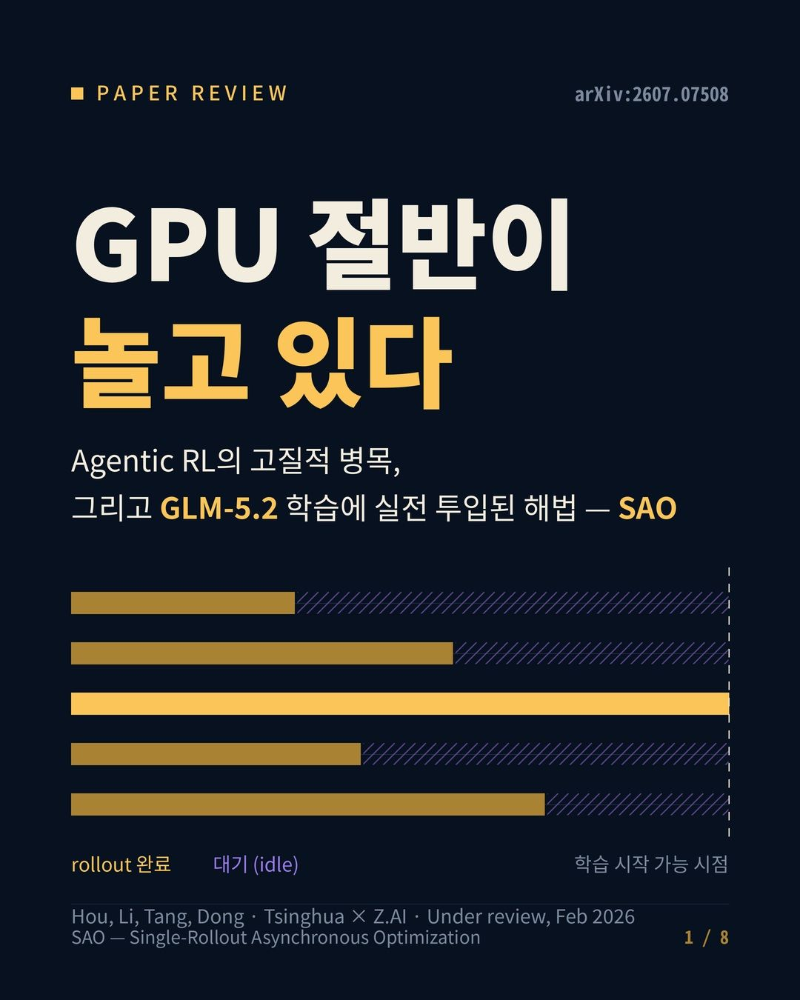
에이전트 기반 LLM 강화학습에서 GRPO 프레임워크의 동기 배치 처리 방식이 비효율적이고, 비동기 롤아웃 환경에서 그룹 샘플링이 자연스럽지 못한 문제를 해결하는 최적화 방법론. Single-rollout Asynchronous Optimization은 개별 롤아웃이 도착하는 즉시 모델을 업데이트하면서 훈련 안정성과 작업 효과성을 모두 확보하며, 장기 에이전트 작업의 처리량을 크게 향상시킨다.
핵심 포인트: 핵심 기여: 비동기 환경에서 GRPO의 그룹 샘플링 문제를 단일 롤아웃 기반 최적화로 해결하고, GLM-5.2 학습에서 에이전트의 처리량을 실질적으로 증대시키면서 수렴 안정성을 보장하는 방법론 제시.
논문 (Papers)
Claude Sonnet 5 — 한국어 도구 호출 파라미터 손상 버그
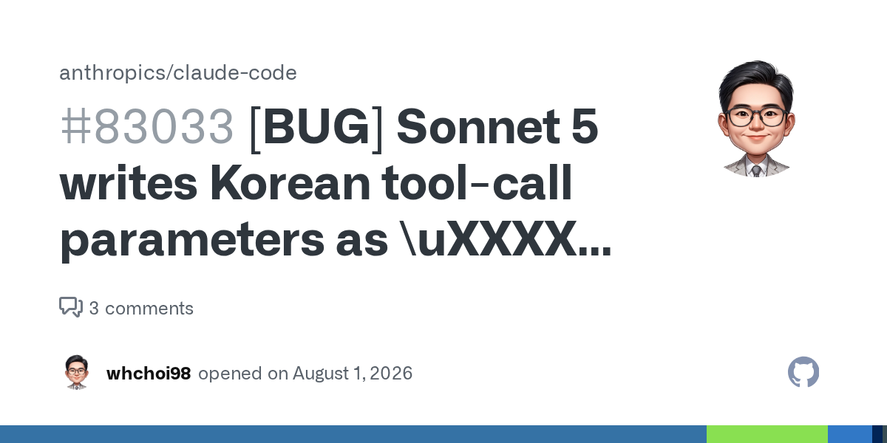
Claude Sonnet 5가 도구 호출 파라미터에 한국어를 입력할 때 유니코드 이스케이프 시퀀스로 변환하면서 16진수 코드를 오류로 작성하여 한글 음절이 다른 음절로 손상되는 문제가 발생한다. A/B 테스트 결과 이스케이프 방식 사용 시 100% 손상율을 보였으며, 음절 기준 약 3~5%의 손상 밀도를 기록했다. 시스템 프롬프트에 리터럴 UTF-8 사용 지시를 추가하면 이 유형의 손상을 거의 완벽하게 방지할 수 있다.
핵심 포인트: 핵심 성과: 유니코드 이스케이프 방식 사용 시 45/45 실행 전부에서 한글 손상 발생 확인, 리터럴 UTF-8 사용으로 손상 거의 제거됨. 임시 해결책은 시스템 프롬프트에 한국어 문자열 리터럴 UTF-8 작성 지시 추가.
🔗 github.com/anthropics/claude-code/issues…
GitHub
ImplicatureX: LLM의 대화 함축 이해 능력 평가
인간은 대화 맥락 변화에 따라 숨은 의도를 자동으로 갱신하는데, 현재 LLM은 화용론의 핵심 개념인 대화 함축(implicature)과 그 취소 현상을 인식하는 능력이 인간 수준에 미치지 못한다. 이 논문은 전문가가 주석한 ImplicatureX 데이터셋을 통해 LLM이 명시되지 않은 신념을 인식하고 그 변화를 이해하는 능력을 평가하며, 최첨단 모델도 상황 맥락에 따른 미묘한 의미 변화 파악에서 한계를 보인다.
핵심 포인트: 핵심 기여: 대화 함축과 함축 취소 현상을 평가하는 첫 번째 전문가 주석 데이터셋 ImplicatureX 구축, LLM이 인간만큼 맥락 기반 신념 업데이트를 처리하지 못함을 실증적으로 입증.
논문 (Papers)
DEVTOOLS & OPEN SOURCE
OpenSRE — AI 기반 프로덕션 장애 자동 분석 오픈소스 프레임워크
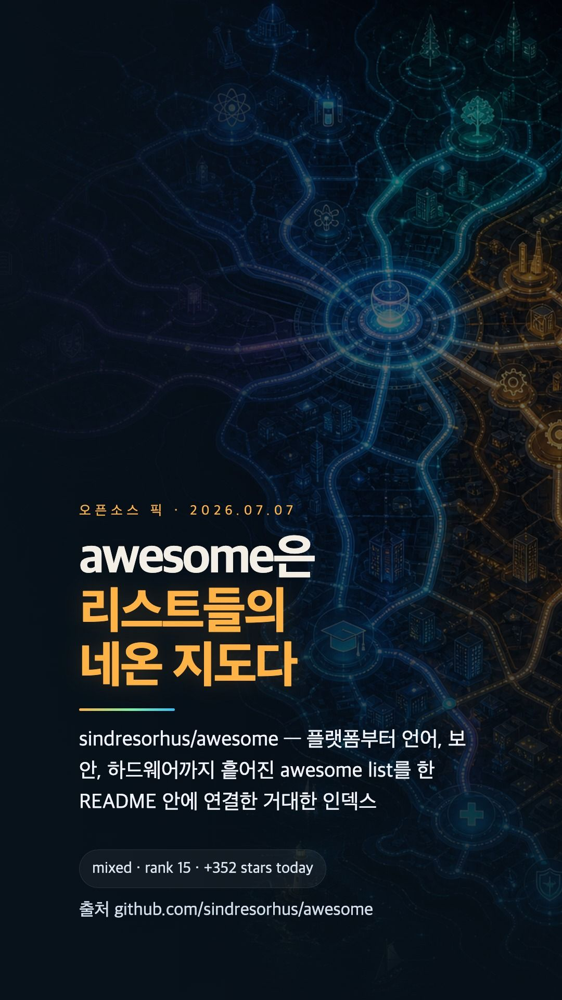
프로덕션 서버 장애 발생 시 대량의 로그와 슬랙 메시지를 수동으로 분석해야 하는 SRE 팀의 부담을 해결하기 위해 등장한 오픈소스 AI SRE 프레임워크. OpenSRE는 AI 에이전트가 실제 인프라(Kubernetes, EC2 등)에 연결되어 근본 원인을 자동으로 파악하고 60개 이상의 기존 도구를 통합하며, 커스텀 워크플로우를 정의해 자체 인프라에서 독립적으로 사건을 조사할 수 있는 실용적인 평가 환경을 제공한다.
핵심 포인트: 핵심 기여: 실제 인프라 기반의 정교한 평가 환경과 60개 이상의 도구 통합을 통해 AI SRE 에이전트의 실무 적용성을 높였으며, 코딩 에이전트 벤치마크인 SWE-bench에 상응하는 프로덕션 장애 대응 평가 체계를 구축했다.
🔗 github.com/Tracer-Cloud/opensre
GitHub
Paseo — 다중 AI 에이전트를 한 화면에서 관제하는 통합 플랫폼
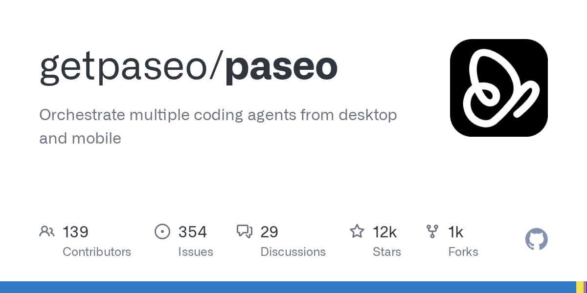
Claude Code, Codex, Copilot, OpenCode 등 여러 AI 에이전트를 각각 관리하기 어려운 개발 환경의 분산화 문제를 해결한다. Paseo는 로컬 머신이나 VPS에서 에이전트를 실행하고 iOS, Android, 웹, CLI 등 모든 기기에서 통합 인터페이스로 제어할 수 있는 중앙 관제 시스템을 제공한다. 자체 개발 환경, 설정, 스킬을 유지하면서 다중 공급자 에이전트를 병렬로 실행하고, 음성 제어, 브라우저 미리보기, 직접 커밋 워크플로우를 지원한다.
핵심 포인트: 핵심 성과: 1인 개발로 GitHub 별 11.3K 달성, AGPL 오픈소스 무료 제공, 원격 E2E 암호화 연결과 로컬 직접 연결 모두 지원, 텔레메트리/강제 로그인 없는 프라이버시 우선 설계
기타 (Others)
Effective HTML — AI 에이전트의 HTML 아티팩트 생성 스킬 모음
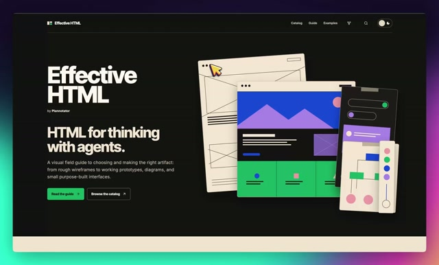
Claude Code 등 AI 에이전트가 생성하는 마크다운 계획서의 가독성 문제를 해결하기 위해 Plannotator 팀이 개발한 오픈소스 프로젝트. 타리크의 고품질 HTML 예시 20개를 레퍼런스로 활용하여 에이전트가 계획서, 다이어그램, 프로토타입 등을 시각적으로 우수한 HTML 아티팩트로 생성하도록 유도한다. 38개의 실제 사용 사례와 9가지 용도별 스킬을 제공하며 npx 명령 한 줄로 Claude Code에 설치 가능하다.
핵심 포인트: 핵심 기여: 6가지 선택적 스킬(html, design-artifact, html-wireframe, html-prototype, html-plan, html-diagram)과 38개의 참조 아티팩트를 통해 AI 에이전트의 시각적 결과물 품질을 표준화하고, 작은 언어 모델이 학습할 수 있는 교재로 활용 가능하게 구성했다.
🔗 github.com/plannotator/effective-html
GitHub
pdf-inspector — 200장 PDF를 2.8초에 마크다운으로 변환하는 경량 변환 도구
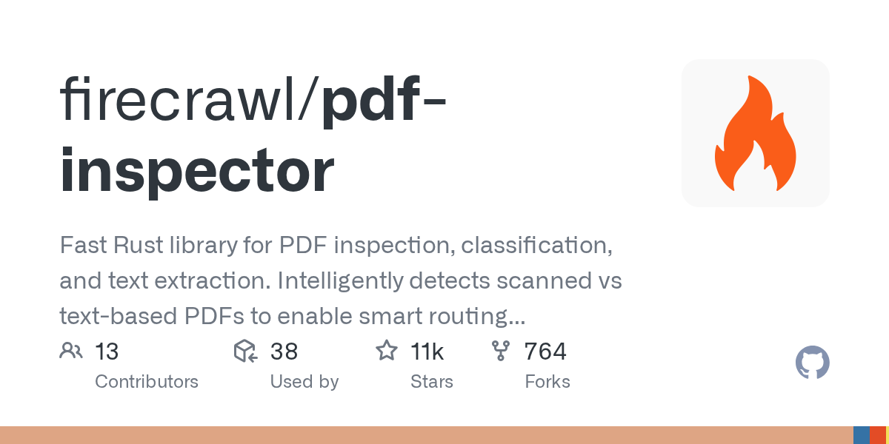
PDF 파싱 시 모든 문서를 OCR 처리하는 비효율성 문제를 해결하는 도구. pdf-inspector는 Rust 기반으로 로컬에서 동작하며 문서 내부 구조를 분석해 텍스트 기반과 스캔본을 10-50밀리초 내에 자동 분류한다. 텍스트 기반 PDF는 OCR 없이 마크다운으로 직접 추출하고, 스캔본만 OCR로 처리해 전체 처리 시간을 획기적으로 단축한다. 제목, 표, 목록, 다단 구조를 보존하며 API 키나 고사양 GPU 없이 무료로 사용 가능하다.
핵심 포인트: 핵심 성과: 200장 PDF 2.8초 변환, 스캔 비율 54%인 현실 세계 문서에서 OCR 처리 대상을 최대 71% 감소시킴(150장 텍스트+60장 스캔 기준 210장→60장)
🔗 github.com/firecrawl/pdf-inspector
GitHub
GitHub Stacked PR — 대형 변경을 계층별로 나눈 검토 체계 공개 미리보기
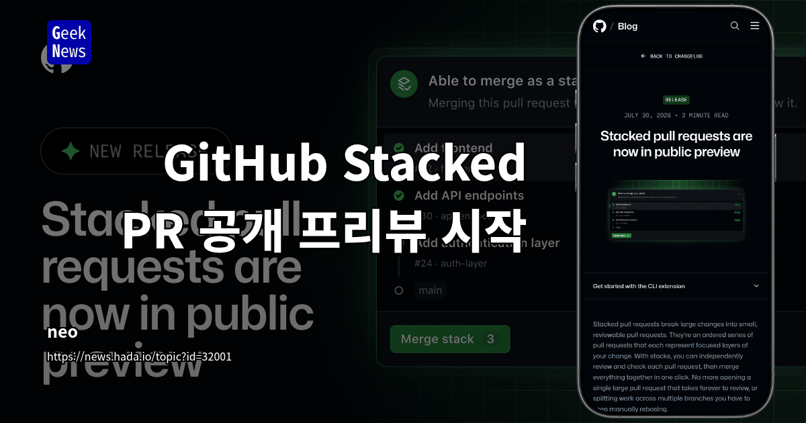
대형 코드 변경을 검토할 때 단일 대규모 PR로 인한 검토 병목 문제를 해결하기 위해 GitHub가 Stacked Pull Requests 기능을 공개 미리보기로 출시했다. 큰 변경을 작고 검토 가능한 계층으로 나누어 팀원들이 각 계층의 좁은 범위 diff를 병렬로 독립 검토할 수 있으며, 상위 PR 병합 시 하위 미병합 계층까지 자동 리베이스 및 대상 변경된다. 기존 브랜치 보호, 필수 검사, 병합 요건이 그대로 적용되고 GitHub.com, CLI, 모바일 앱, GitHub Copilot에서 지원된다.
핵심 포인트: 핵심 성과: 개별 변경을 작게 유지하면서 PR 검토 속도와 정확도를 향상시키며, 전체 또는 일부 스택을 선택적으로 병합 가능하고 자동 리베이스로 의존성 관리 자동화. 공개 미리보기는 며칠에 걸쳐 전체 저장소로 확대되며 Merge queue 지원은 이후 점진적으로 제공될 예정이다.
기타 (Others)
TurboOCR — C++/TensorRT 기반 초고속 문서 OCR 엔진
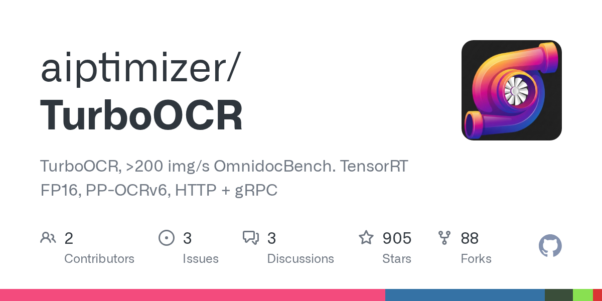
기존 무거운 VLM 모델에 의존하지 않고도 문서에서 텍스트, 표, 수식을 추출할 때 발생하는 성능 병목 문제를 해결하는 도구이다. TurboOCR은 순수 C++과 TensorRT만으로 구현되어 초당 20페이지 이상의 문서를 처리하며, 8GB VRAM 수준의 저사양 GPU에서도 구동 가능하여 RAG 시스템 고도화에 필요한 효율적인 문서 파싱을 제공한다.
핵심 포인트: 핵심 성과: 단일 GPU에서 초당 200~559개 이미지 처리, RTX 2060 같은 8GB VRAM 저사양 환경에서도 안정적으로 구동되는 극한의 효율성을 달성하였다.
🔗 github.com/aiptimizer/TurboOCR
GitHub
QM — YC가 공개한 멀티플레이어 에이전트 하네스
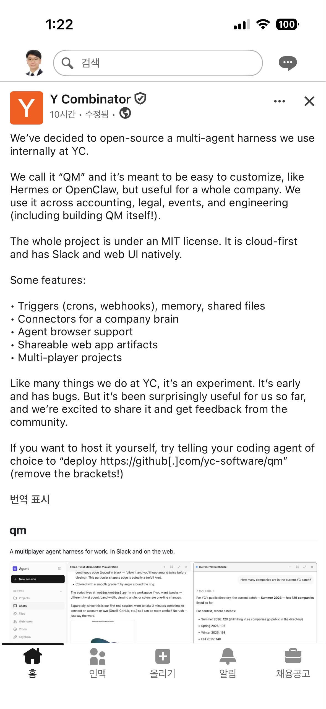
기존 에이전트 도구들은 개인 중심으로 설계되어 기업 전체에서 사용할 때 권한 관리가 복잡해지는 문제가 있다. YC가 오픈소스로 공개한 QM은 권한을 핵심으로 설계하여 이를 해결한다. 모든 파일, 메모리, 자격증명을 개인, 채널, 팀, 조직 단위로 스코핑하고, 공유 채널에서는 참여자 전원의 허용 목록 교집합만 접근 가능하게 제한한다. MIT 라이선스 기반이며 Slack과 웹에서 모두 지원된다.
핵심 포인트: 핵심 기여: 권한 관리를 데이터 모델 자체에 내장하여 회계, 법무, 이벤트, 엔지니어링 등 전사 부서에서 안전하게 사용할 수 있도록 설계했으며, Claude Code, Codex, OpenCode 등 다양한 모델을 자유롭게 교체 가능한 구조를 제공한다.
GitHub
stop-slop — AI 글쓰기 패턴을 자동으로 제거하는 Claude 스킬
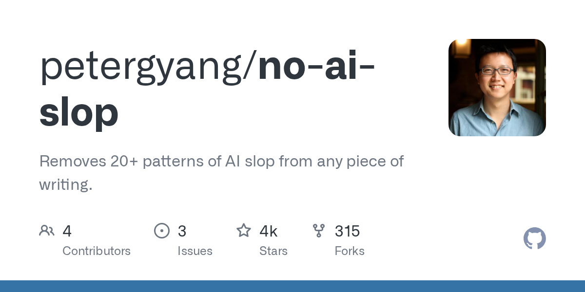
LLM이 생성한 글에는 상투적 도입부, 기계적 대조 구문, 단조로운 리듬 같은 특징적 패턴이 반복되어 독자가 AI 작성을 쉽게 알아챈다. stop-slop은 이러한 AI 특유의 글쓰기 패턴을 목록화하고 Claude 같은 LLM에게 글 작성 및 수정 시 자동으로 이를 감지하고 제거하도록 지시하는 마크다운 기반 스킬 패키지다. 군더더기 문구 삭제, 구조 개선, 능동태 강화 등 8가지 핵심 규칙으로 AI 글의 단조로움을 제거하면서도 개인의 목소리는 유지한다.
핵심 포인트: 핵심 기여: 실행 파일 없이 마크다운 문서만으로 구성되어 Claude Code, Claude Projects, 시스템 프롬프트 등 텍스트 지침을 입력할 수 있는 모든 환경에 적용 가능하며, 20여 개의 AI식 표현 패턴과 문장 구조 규칙을 명문화하여 LLM 자체가 생성 과정에서 반복적 클리셰를 사전에 차단할 수 있다.
🔗 github.com/petergyang/no-ai-slop
기타 (Others)
insane-research — Claude 기반 다단계 AI 리서치 자동화 도구
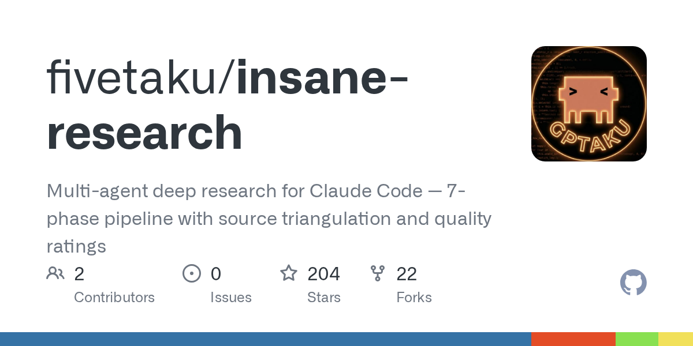
딥리서치 실행 중 자료 수집에 실패하는 문제를 해결하기 위해 개발된 다중 에이전트 AI 리서치 플랫폼. 단일 질문을 입력하면 7단계 파이프라인을 통해 출처 삼각검증과 품질 평가를 거친 종합적이고 인용 기반의 리서치 보고서를 자동 생성한다. 딥리서치 실패 시 insane-search로 자료를 재수집하는 폴백 메커니즘으로 정보 수집 안정성을 높인다.
핵심 포인트: 핵심 기여: Claude Code와 통합된 7단계 멀티에이전트 파이프라인으로 소스 삼각검증을 통한 신뢰도 높은 자동 리서치 보고서 생성, 플러그인 마켓플레이스 지원으로 즉시 설치 및 활용 가능
🔗 github.com/fivetaku/insane-research
GitHub
ENGINEERING
Kimi K3 — AWS에서 2.8T 파라미터 모델 배포 가이드 공개
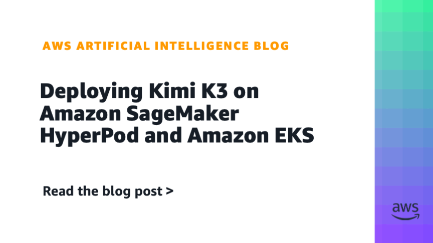
Moonshot AI의 2.8조 파라미터 오픈웨이트 모델 Kimi K3를 AWS 인프라에서 호스팅할 때의 기술적 과제를 다룬다. SageMaker HyperPod와 EKS를 통해 OpenAI 호환 엔드포인트 구축이 가능하지만, 노드당 8개의 B300 Blackwell Ultra GPU 확보와 같은 높은 인프라 요구사항이 필요하다. 가이드는 콜드 스타트 방지를 위해 S3에 모델 가중치를 사전 동기화하는 최적화 기법 등 실전 배포 팁을 제시한다.
핵심 포인트: 핵심 기여: 2.8조 파라미터 대규모 모델의 AWS 상에서의 공식 배포 가이드 제공 및 콜드 스타트 최소화, 가중치 사전 동기화 등 대규모 모델 호스팅을 위한 실전 최적화 기법 공개.
🔗 aws.amazon.com/blogs/machine-learning/dep…
기타 (Others)
PRODUCT & INDUSTRY
Qwen Studio — 챗봇부터 비디오 이해까지 통합 AI 플랫폼
단일 플랫폼에서 다양한 AI 기능을 필요로 하는 사용자들의 통합 솔루션 부족 문제를 해결하는 Qwen Studio는 챗봇, 이미지 및 비디오 이해, 이미지 생성, 문서 처리, 웹 검색 통합, 도구 활용 및 아티팩트 생성에 걸친 포괄적인 기능을 제공한다. 이를 통해 사용자는 여러 도구 간 전환 없이 하나의 인터페이스에서 다양한 멀티모달 작업을 수행할 수 있다.
핵심 포인트: 핵심 기여: 챗봇, 멀티모달 인식, 콘텐츠 생성, 정보 검색, 도구 통합 등 7가지 주요 기능을 단일 플랫폼에 통합하여 사용자 경험을 획기적으로 개선하는 올인원 AI 솔루션 제공.
기타 (Others)
Amazon Bedrock — 파운데이션 모델 접지를 위한 웹 검색 정식 출시
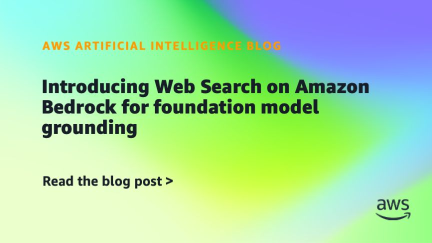
파운데이션 모델이 최신 정보를 기반으로 답변해야 할 때 발생하는 할루시네이션 문제를 해결하기 위해 Amazon Bedrock이 웹 검색 기능을 정식 출시했다. 제3자 공급업체 통합 없이 서버 측 기본 도구로 동작하며, 아마존이 운영하는 수십억 개 문서의 웹 인덱스를 활용하여 현재 지식에 기반한 모델 응답을 제공한다. 별도의 외부 API 오케스트레이션이나 보안 검토 없이 데이터 거주 위험을 제거하면서 챗봇, 코딩 어시스턴트, 엔터프라이즈 애플리케이션 등에 접지 기능을 적용할 수 있다.
핵심 포인트: 핵심 성과: 제3자 공급업체 없이 Amazon Bedrock 기본 기능으로 웹 검색 기반 모델 응답 접지 제공, 데이터 거주 위험 제거 및 운영 오버헤드 해소.
🔗 aws.amazon.com/blogs/machine-learning/int…
기타 (Others)
호반건설 — AI 기반 레미콘 자동 수량 산출 시스템 현장 적용
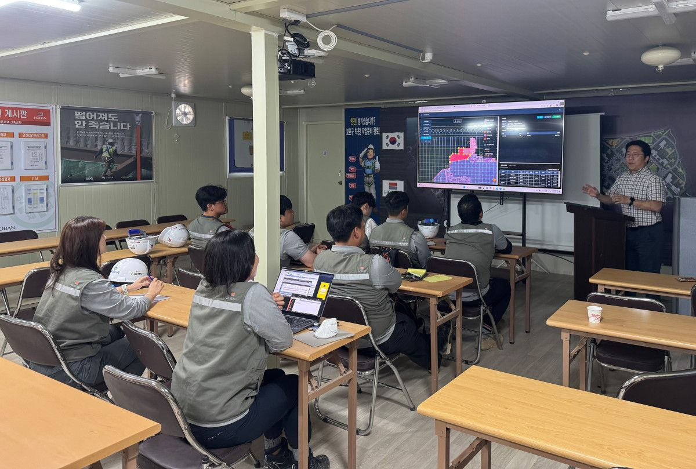
건설 현장의 레미콘 물량 산출에서 도면 정제와 타설 구간 정의가 병목인 문제를 해결하기 위해 호반건설이 AI 기반 자동 수량 산출 시스템을 개발했다. 도면을 서버에 업로드하면 AI가 자동 분석하고, 기술자가 타설 구간을 지정하면 구조체별·강도별 레미콘 소요량이 실시간으로 산출된다. 호반써밋 현장 2곳에서 검증 중이며 8월 중 전 현장으로 확대 적용할 예정이다.
핵심 포인트: 핵심 성과: 업무시간 단축, 수량 산출 정확도 향상, 레미콘 손실량 감소를 통한 공정 운영 효율 개선 달성. 향후 창호 자동 적산 등 AI 기반 물량 산출 시스템을 단계적으로 확대하여 전체 공사 물량 산출 체계 고도화 계획 중이다.
🔗 etoday.co.kr/news/view/2608111
기타 (Others)
Google Gemini macOS — Fn 키 음성 받아쓰기로 앱 전환 없이 직접 입력
macOS 앱 간 전환으로 인한 워크플로우 단절 문제를 해결하기 위해 Google이 Gemini 앱에 Fn 키 음성 입력 기능을 추가했다. 사용자가 Fn 키를 길게 눌러 어떤 앱의 커서 위치에서든 음성으로 말하면 지능형 받아쓰기가 음흠, 아 같은 중얼거림을 제거하고 중간 수정 사항을 반영한 정돈된 텍스트를 즉시 삽입한다. 추론 기능을 활성화하면 화면의 파일이나 선택된 텍스트를 분석하여 요약, 재작성, 이미지 편집까지 수행하며, 결과가 채팅창이 아닌 커서 위치에 직접 입력되어 Whispr Flow 같은 기존 유료 도구와의 경쟁 환경을 조성한다.
핵심 포인트: 핵심 성과: Fn 키 음성 입력으로 앱 전환 없이 모든 창에서 직접 텍스트 입력 가능하며, 현재 영어만 지원되고 추가 언어 지원 예정
🔗 blog.google/innovation-and-ai/products/ge…
블로그 (Blog)